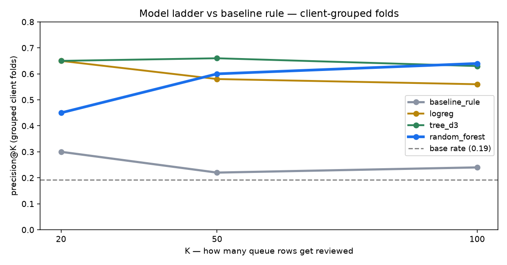
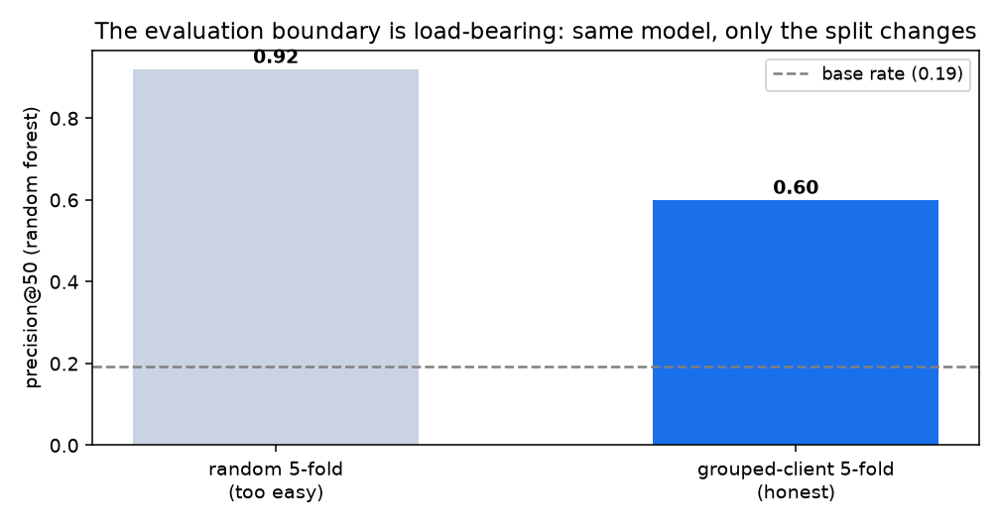
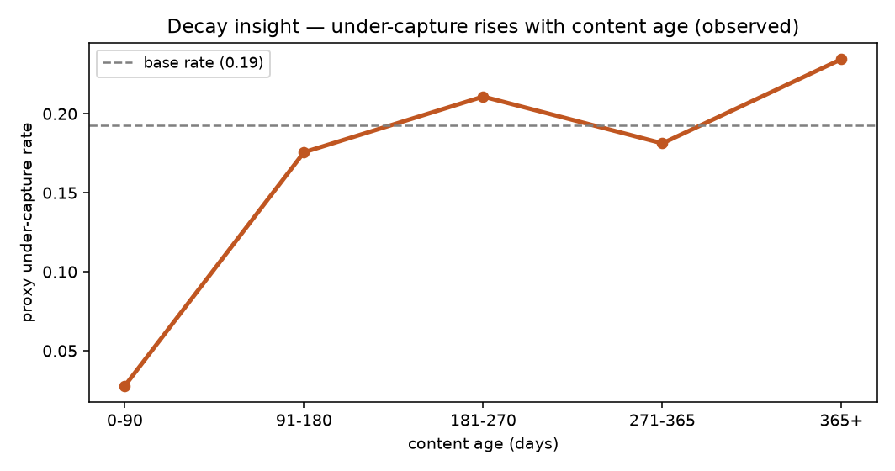
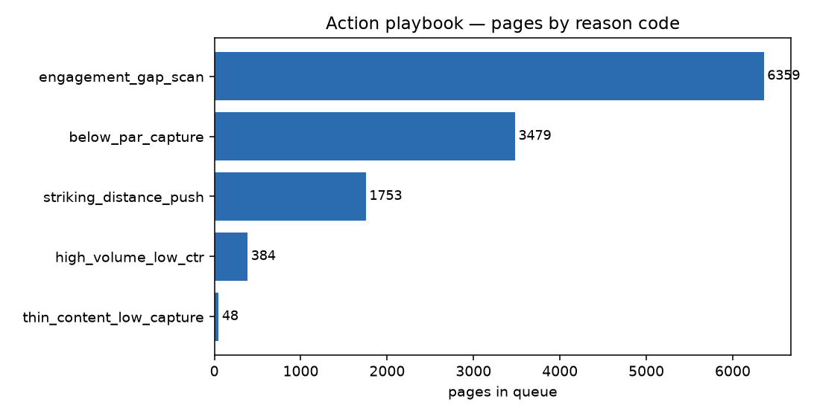

FlyRank ML Internship · Applied Search Intelligence · Lane 4 — CTR / Engagement Opportunity Scoring · 2026
Which Pages Should a Reviewer Look at First? A Client-Grouped Decision-Support Ranker for Organic CTR Under-Capture
Abstract
Question (FlyRank). For a FlyRank content team with a limited review budget, which published pages look like they capture fewer clicks than their position tier should earn — i.e., where is review attention most likely to be useful this cycle? The useful decision is the order of that review. Data. We use the pseudonymised FlyRank ML Internship starter release — 30,000 content pages across 32 clients — restricted to a decision-relevant slice of 12,023 pages across 28 clients with at least 500 ninety-day impressions and a known position on page one or striking distance. Method. We define a transparent proxy label for under-capture (click-through rate below half the median for its position tier) and compare a hand rule against logistic regression, shallow decision trees, and a random forest, using each model's probability as a ranking score on identical client-grouped folds. Result. A random forest has the highest observed ranking quality (precision@50 of 0.60 versus the rule's 0.22 and a base rate of 0.19), but the same model scores 0.92 under a random split — the 0.32 gap is the memorisation the grouping removes. Use. The output is a ranked, human-reviewed review queue with reason codes and a no-go list: decision-support for prioritising human attention, not an automated action and not a causal claim.
1 Introduction & problem
FlyRank case study. FlyRank helps content teams prioritize which pages to refresh. Many published pages earn impressions yet capture fewer clicks than comparable pages in the same position tier. With limited review capacity per cycle, the business need is prioritization: which under-capturing pages deserve a human review first? This is the FlyRank content-refresh problem — Lane 4 (CTR / Engagement Opportunity Scoring) addresses exactly this ordering task.
A page can earn impressions for weeks while capturing fewer clicks than its position should justify — a quiet loss that no dashboard alarm flags. The practical decision is not "will this page decline?" in the abstract; it is "which pages should a person look at first this cycle?" when the review budget is a few dozen rows, not the whole portfolio.
This paper reports a decision-support ranker for that queue, evaluated the way it would be used. The unit of analysis is one content page for one client at a single snapshot; the output is a ranked score; the action a human takes is inspect-and-decide on the head of the queue; and the cost of a wrong call is a wasted review slot — bounded, because a person still checks every page before anything changes.
We make three testable claims, each tied to evidence and to the skill's claim ladder:
- C1 (model beats rule, measured). On identical client-grouped folds, the random forest ranks above the hand rule at every reported K (precision@50 0.60 vs 0.22, base rate 0.19).
- C2 (the boundary is load-bearing, observed). The same forest scores 0.92 under a random split and 0.60 under client-grouping; the gap measures memorisation, so the number must travel with its split.
- C3 (a proxy, disclosed). The label is a definition derived from click-through rate, not an observed business outcome, so every result is decision-support and directional — no causal claim is made anywhere.
2 Data
2.1 Source, unit, window
Source is the anonymised FlyRank ML Internship starter release: one row per pseudonymised
content page, 30,000 pages across 32 clients, with 44 columns of ninety-day search, session, and
content-metadata fields. Identifiers (content_id, client_id) are
pseudonymous and used for grouping and joining only — never as features. All metrics are
ninety-day, rolling-window observations; there is no daily fact table in this release, so the
validation is cross-sectional and grouped, not time-forward (see §5).
2.2 Decision slice
To keep the label meaningful and the ranking decision-relevant, we restrict to pages that have a measurable footprint and a position on the page-one / striking-distance range:
slice = impressions_90d >= 500 AND 0 < avg_position <= 20 → 12,023 pages / 28 clients
Newly published pages, very-low-visibility pages, and pages with missing position
(avg_position = 0, 1,205 rows in the full release) fall outside this slice by design,
and the queue cannot speak for them.
2.3 What we excluded and why
- Label-defining columns. The proxy label is built from click-through rate, which is itself
clicks_90d / impressions_90d. Soclicks_90d,ctr, and the tier-relativectr_vs_tierare quarantined — never features. - Label-family / trend columns.
trend_direction,trend_pct, andis_declining_labelencode a different outcome and are excluded outright. - Identifiers.
content_id(unique per row) andclient_id(grouping) never enter the feature frame.
2.4 Data quirks we honoured
Rate columns are stored as percentages (×100), so the tier median is computed on the same scale.
scroll_rate carries missing values, and zero engagement/scroll values are frequently
absent instrumentation rather than true low engagement — a measurement trap we call out in the
review rules. Missingness follows content_type.
3 Methodology
3.1 The label (a proxy, stated plainly)
We define under_capturing as a page whose click-through rate is below half the
median CTR of its position tier, among pages with at least 1,000 impressions:
pos_tier = bin(avg_position) into {top_3: 1–3, page_1: 4–10, striking: 11–20}
ctr_vs_tier = ctr / median_ctr(pos_tier)
under_capturing = (ctr_vs_tier < 0.50) AND (impressions_90d >= 1000)
Base rate in the slice: 0.193. This is a definition, not an observed outcome. It is a deliberate stand-in for "captures fewer clicks than its position should," and its circularity — it is derived from CTR — is the single most important caveat in this paper (§6, §7).
3.2 Features (all knowable at the decision moment)
Nine numeric and six categorical fields, none of which define the label:
impressions_90d, avg_position, content_age_days, days_since_last_update, sessions_90d,
engagement_rate, scroll_rate, word_count, search_volume, plus pos_tier, main_intent,
content_type, position_tier, age_tier, freshness_tier. Every feature is an observed snapshot
field; no feature window contains a future label window.
3.3 Baseline first
Following baseline-first practice, we built a transparent rule before any model: flag pages whose
CTR is below half the tier median and weight by volume,
baseline_score = (ctr < 0.5) × log1p(impressions_90d). It is a fair comparison because
it uses the same slice, the same metric, and the same folds as every model.
3.4 Models
Ranking needs scores, not labels, so each classifier's predicted probability is used as the ranking score. The ladder runs readable → stronger: logistic regression (standardised), a depth-2 and a depth-3 decision tree (printable rules), and a 300-tree random forest. Seed 42 for every stochastic component.
3.5 Validation design
Client-grouped folds (GroupKFold(5) on client_id): whole clients are
held out, so the model is tested on clients it has never seen. This is the honest split here — pages
from one site share templates, intent mix, and seasonality the model could otherwise memorise. We
report out-of-fold results only, next to the base rate.
3.6 Leakage checks (all run in code)
- Train-without test. Adding
clicks_90dback into the features pushes precision@50 from 0.86 toward 1.00 — the confession that it reads the label back. It stays out. - Column audit. Assert the banned list (
clicks_90d, ctr, ctr_vs_tier, trend_*, is_declining_label, content_id, client_id) is absent from the feature frame — it is. - Split integrity. Assert no client straddles a train/test boundary in the grouped split — none does.
4 Results
All methods are scored on identical client-grouped folds (GroupKFold(5), seed 42), so the comparison is apples-to-apples. The base rate (0.193) is shown separately because it is the label's natural frequency, not a fitted method.
| method | P@20 | P@50 | P@100 | ROC-AUC | AP |
|---|---|---|---|---|---|
| baseline rule (transparent) | 0.30 | 0.22 | 0.24 | 0.653 | 0.246 |
| logistic regression | 0.65 | 0.58 | 0.56 | 0.607 | 0.265 |
| decision tree (depth 2) | 0.45 | 0.50 | 0.49 | 0.712 | 0.328 |
| decision tree (depth 3) | 0.65 | 0.66 | 0.63 | 0.744 | 0.404 |
| random forest (300 trees) | 0.45 | 0.60 | 0.64 | 0.777 | 0.436 |
The random forest has the highest average precision and ROC-AUC and the best precision@50 and @100; the depth-3 tree is competitive at the very head (P@20) while staying printable. Every learned method beats the rule's ranking on discrimination (ROC-AUC), and all sit far above the 0.193 base rate — so the model carries real, generalisable signal, not just the label's frequency.

4.1 The evaluation boundary is load-bearing (C2)
The same random forest, with the same features, scores 0.92 precision@50 under a random 5-fold split and 0.60 under client-grouping. Only the split changes. The 0.32 gap is the memorisation the grouping removes: under a random split the model partly recognises which client a page came from. The honest number is the grouped one, and the gap is itself a finding — a random-split headline would have overstated the ranking's real-world quality by more than half.

5 Interpretation
What the model leans on. Permutation importance from the Week-5 model puts
impressions_90d first, then sessions_90d, engagement_rate, and
content_age_days. These are sensible, observable signals — a page's own downside is
visible in its volume and engagement — and none of them is the label ingredient.
Where it fails. The top of the queue carries a repeatable false-positive signature: pages
with engagement_rate = 0. The model reads a zero as "weak capture," but zero is
frequently missing instrumentation, so these are measurement artefacts promoted into
rankings — which is exactly why the review rules require checking instrumentation first.
A negative result we keep. Scroll depth shows little separation between the under-capturing and healthy groups in this slice. We report it because pruning a plausible-but-weak feature story is a result, not a failure.
5.1 The decay pattern (observed, directional)
Across age buckets, the share of pages flagged as under-capturing rises from 0.03 among pages under 90 days old to 0.24 among pages over a year old — a monotone-ish climb that mirrors the dataset's own lifecycle story. Read honestly: in this portfolio, older pages are associated with lower tier-relative CTR. This is an observational comparison — it says nothing about whether refreshing an old page will restore its clicks (that needs an experiment). It is a reason to look, not a lever.

6 Limitations & honest framing
- The label is a proxy.
under_capturingis defined from CTR, so part of the measured ranking skill reflects that definition rather than independent truth. Any feature correlated with CTR (impressions_90d,sessions_90d) carries a weaker version of the same circularity. - No causal claim. Nothing here shows that refreshing a flagged page changes its outcome; that requires a controlled experiment this project did not run.
- One snapshot, one portfolio. The starter release is cross-sectional; patterns need not transfer to another site, and a time-forward evaluation was not possible without a daily fact table.
- Modest absolute precision. The grouped precision@K (0.45–0.66 depending on K and method) is well above the 0.19 base rate but far from a guarantee; the queue's ordering is real, its hit-rate is not high.
- Measurement traps. Zero
scroll_rate/engagement_ratevalues are often missing data, not truth, and they sit at the top of the queue. - Survivorship by design. The slice keeps pages with ≥500 impressions; absent pages are not evidence of health.
- A negative result. Scroll depth did not separate the groups in this slice — reported, not hidden.
7 Ranked recommendations (action playbook)
The model orders; a human decides. The queue carries, for each page: a score, a rank, a one-line reason code drawn from observable signals, and an archetype→action mapping. The reason code is annotation for people — it may reference the tier-relative ratio, which is never a model feature — so the ranking stays leakage-safe while the explanation stays readable.

What a reviewer does, in order:
- Verify instrumentation. If the reason is
engagement_gap_scan, confirm the page is instrumented before acting — zeros are often missing data. - Apply the action.
high_volume_low_ctr→ tighten title/meta around clear intent;striking_distance_push→ strengthen relevance and internal links;thin_content_low_capture→ expand with real subtopics (no padding);below_par_capture→ review title/meta and opening promise. - Log the follow-up window. Record the page and its 30-day outcome so the queue can be assessed later.
The no-go list (never automated): no auto-publishing or auto-editing; no auto-refresh scheduling; no deleting, redirecting, or de-indexing; no client-facing decisions from these scores; no treating a score as proof of lost revenue; no production pipeline without a new controlled design.
Monitoring / retrain triggers: regenerate monthly (snapshot age > 30 days); re-fit if the label base rate moves > ±25% from 0.193; retire the queue if grouped precision@20 drops below ~1.5× the base rate; re-derive on any schema change; pause if reviewers repeatedly find the queue head wrong.
Cost/value. Inference is negligible next to a human review slot; the queue's value is concentrating scarce review time, and its cost of being wrong is bounded by the human check.
8 Reproducibility
Environment
python 3.12
scikit-learn 1.9.1
pandas 3.0.6
numpy 2.5.4
seed 42 (all stochastic models)
data anonymised starter release,
revision-pinned in the repo
Run
git clone https://github.com/omar320250068-prog/flyrank-ml-internship pip install -r requirements.txt # execute notebooks in card order: # w01 → w02 → w03 → w04 → w05 → w06 → w07 → capstone # each notebook runs top to bottom; # metrics receipts land in work/outputs/
| result | regenerated by |
|---|---|
| Table 1 (model-vs-baseline, grouped folds) | capstone.ipynb → work/outputs/capstone_core_metrics.json |
| Figure 1 (precision@K) | capstone.ipynb — figures cell |
| Figure 2 (split gap) | w06_validation_audit.ipynb → work/outputs/w06_validation_audit.json |
| Figure 3 (decay) | w07_action_playbook.ipynb → work/outputs/w07_playbook_metrics.json |
| Figure 4 (reason codes) + queue CSV (regenerable) | w07_action_playbook.ipynb — exports cell |
→ Source repository · Executed notebooks · Metrics receipts (JSON)
Acknowledgments & data credit
Built on the FlyRank ML Internship dataset — flyrank.ai. Crediting the data source is standard research practice. All data used here is pseudonymised; no client names, URLs, or private queries appear anywhere in this work.
References
Decision-support research · no causal claims · claims phrased as observed, measured, directional, decision-support.